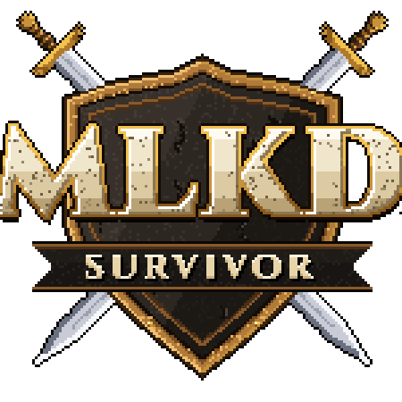
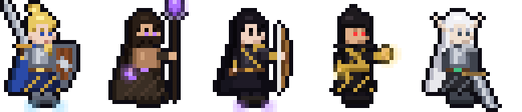

UNIVERSO MLKD
Os jogos de Valdoria, feitos junto com a comunidade.

MLKD Survivor
Sobreviva a hordas de monstros em pixel art: você só controla o movimento e o herói ataca sozinho. Escolha cartas de poder, evolua armas e chegue ao chefe de cada mapa. Sete mapas, Pesadelo, Corrida do Ouro e a Torre de Valdoria com ranking.
Android · Privacidade · Termos · Excluir dados

MLKD RPG
O RPG de Valdoria dentro do Telegram: crie seu herói, suba de nível, explore mapas e masmorras, lute na Arena e nas guerras de guilda. Quem chega ao nível 10 ganha o Rei Caído, classe exclusiva do MLKD Survivor.
Comunidade MLKD
Novidades, eventos, sugestões e conversa com quem joga. Os mercenários do MLKD Survivor são jogadores de verdade da comunidade.